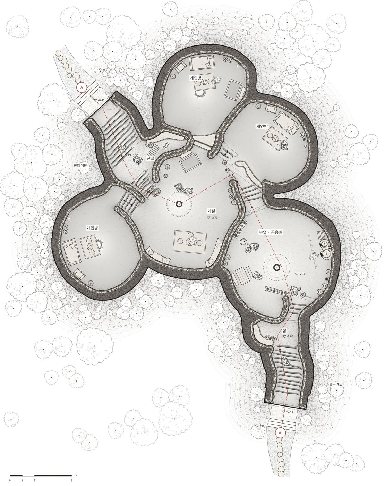

01 — Projects
Selected Works 2021–2026
홍익대학교 건축학과 · 설계 스튜디오 · 졸업설계
- 01MOSSCAPE OREUM졸업설계 · 집합주거 · 2026
 생존을 위해 지었으나, 우연히 면역 장치가 된 마을
생존을 위해 지었으나, 우연히 면역 장치가 된 마을 - 02ALLEY HOUSE4학년 · 집합주거 · 2025
 확장되어 사라진 발코니를, 확장할 수 없는 복도로 옮긴다
확장되어 사라진 발코니를, 확장할 수 없는 복도로 옮긴다 - 03SPARE ROOM3학년 2학기 · 리노베이션 · 2023
 함께 외로운 도시인들의 집
함께 외로운 도시인들의 집 - 04IN-BETWEEN3학년 1학기 · 업무시설 · 2023
 서로 다른 도시적 스케일을 수용하며 골목과 대로를 연결한다
서로 다른 도시적 스케일을 수용하며 골목과 대로를 연결한다 - 05STOPOVER2학년 · 공공청사 · 2022
 정류장 앞, 용건이 없어도 들러 쉬어 가는 주민센터
정류장 앞, 용건이 없어도 들러 쉬어 가는 주민센터 - 06비어가는 마을공모전 · 빈집 · 어촌 재생 · 2026
 비어가는 마을, 사라진 것들이 들어오는 집
비어가는 마을, 사라진 것들이 들어오는 집

01 — 졸업설계 · 집합주거 · 2026MOSSCAPE OREUM
생존을 위해 지었으나, 우연히 면역 장치가 된 마을
프로젝트 보기 →
02 — 4학년 · 집합주거 · 2025ALLEY HOUSE
확장되어 사라진 발코니를, 확장할 수 없는 복도로 옮긴다
프로젝트 보기 →
03 — 3학년 2학기 · 리노베이션 · 2023SPARE ROOM
함께 외로운 도시인들의 집
프로젝트 보기 →
04 — 3학년 1학기 · 업무시설 · 2023IN-BETWEEN
서로 다른 도시적 스케일을 수용하며 골목과 대로를 연결한다
프로젝트 보기 →
05 — 2학년 · 공공청사 · 2022STOPOVER
정류장 앞, 용건이 없어도 들러 쉬어 가는 주민센터
프로젝트 보기 →
06 — 공모전 · 빈집 · 어촌 재생 · 2026비어가는 마을
비어가는 마을, 사라진 것들이 들어오는 집
프로젝트 보기 →